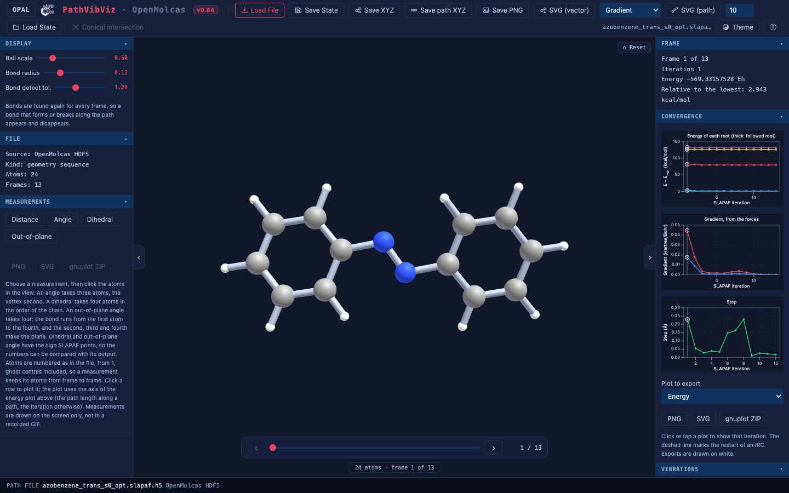

Draft
This page is not finished (status: checked). It may be incomplete, and its steps have not all been checked in the tool.
Save XYZ¶
What it does¶
Two buttons of the toolbar write geometries to XYZ files, which almost any program reads. Save XYZ writes the step you are on. Save path XYZ writes the whole path as one file with a frame for every step, which a viewer can play as a movie. While a vibration, or g or h of a conical intersection, is on show, Save path XYZ writes one swing of it instead.
How¶
To save one step:
- Move the scrubber to the step you want. See Scrub through the frames.
- Press Save XYZ. The file is named
<name>.step<NN>.xyz, where<name>is the name of the file you opened without its ending and without the module part SLAPAF puts before it, and<NN>is the frame number the scrubber shows, with at least two digits.
To save the whole path:
- Press Save path XYZ with no vibration on show. The file is named
<name>.path.xyzand holds every step of the file in its order, each exactly as Save XYZ would write it.
To save a swing:
- Choose a mode in the section Vibrations, or g or h of a conical intersection, so that the molecule swings.
- Press Save path XYZ. The file holds 24 frames, evenly spaced over one swing, at the amplitude on show. Its name is
<name>.mode<N>.xyzfor mode number N, or<name>.ci_g.xyzand<name>.ci_h.xyz.

Tips and pitfalls¶
The coordinates are the file's own
The coordinates are in Å, in the frame of reference of the file, and not in the principal axes in which the view draws the molecule. A ghost centre is written with the symbol X, so the atom numbers stay what they are in the file. Every atom of the file is written.
The comment line
The second line of each frame says the tool and its version, the file, and the step; for an IRC it also says whether the step is on the forward or the backward branch or is the starting point, and for a predicted last frame it says that the geometry was predicted and not computed. For a swing it gives the phase and the amplitude.
Save XYZ declines while a mode is on show
A swing is not a step of the path. If a vibration, or g or h, is on show, Save XYZ shows a message and writes nothing. Move the scrubber to go back to the path, then save.
On an iPhone or iPad
The files are passed to the share sheet of the system. See Save files on iPhone and iPad.